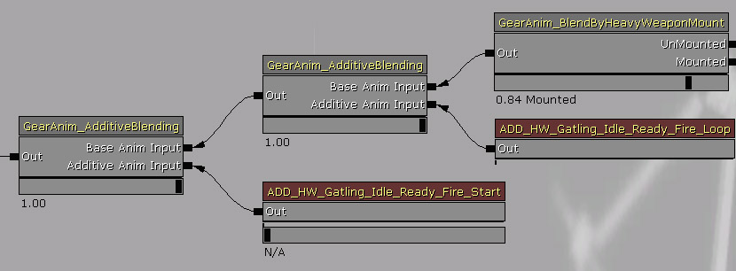
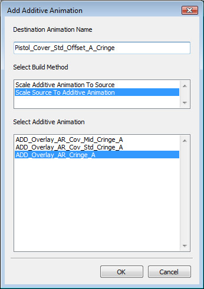

UDN
Search public documentation:
AdditiveAnimationsCH
English Translation
日本語訳
한국어
Interested in the Unreal Engine?
Visit the Unreal Technology site.
Looking for jobs and company info?
Check out the Epic games site.
Questions about support via UDN?
Contact the UDN Staff
日本語訳
한국어
Interested in the Unreal Engine?
Visit the Unreal Technology site.
Looking for jobs and company info?
Check out the Epic games site.
Questions about support via UDN?
Contact the UDN Staff
叠加型动画
概述
叠加型动画通过将两个动画彼此相减进行计算，并将其存储为两个动画的差值。实际上叠加型动画本身并没有什么用途，因为它需要添加到另一个动画上才能正常工作。使用叠加型动画实际目的是想找到可以应用到多个动画上的叠加姿势。这可以降低每个状态需要的动画数量。比如一个武器弹药装载动画可以制作成为叠加动画。现在可以把它添加到空闲动画、走步的动画集(前、后、左和右)上面，同样也可以添加到跑步的动画集上。所以不必制作向前走动过程中加载弹药的动画或者其他任何组合动画，只需要创建一个装载弹药的叠加动画，然后将其添加到向前走动、向后跑动等动画的上面即可。
叠加型动画对过滤器
上面的武器装载弹药示例也可以通过使用过滤器完成。可以在角色的上身播放装载弹药动画，而让角色的下身播放静止、走动或跑动动画。使用过滤器的问题是它会完全地覆盖上半身的动画。所以当它处于空闲的站立时看上去是非常僵硬的，跑动时也会产生不自然的动画混合。即使沿着脊柱和肩部进行对过滤器权重进行插值，效果也不是很好。通过使用一个叠加型动画，便可以保存两个运动(全身的运动和重新装载弹药的运动)，并且可以产生较好的视觉效果。叠加动画存在问题
叠加型动画存在的问题是，把两个动画叠加到一起并不能总是产生您想要的效果。当构建时，叠加型动画是两个动画间的不同部分。您所获得的是个叠加型动画，它可以在那个特定动画的上面工作的很好。但是如果您将叠加型动画和另一个动画结合使用，结果可能不像您所期望的那样。 您可能会看到枪支戳到面部上、角色看上去不自然等等。所以创建及使用叠加型动画不是一个容易的过程。一般，您将会想在一个非常接近于基础姿势的动画上使用叠加动画，您也将会想使用IK骨骼来修复在四肢中的错误。一个常见的问题是使用叠加型动画来影响一个角色的臀部和腿部，但最终的结果并没把脚部放置到您期望放置的位置上。使用脚部放置可以解决这个问题。创建叠加型动画
您想让其用于进行减法操作的两个动画必须在同一个动画集中。在动画集编辑器打开它。在浏览器中选择一个动画。如果您想执行Additive(叠加动画) = A – B，那么您首选应该选择A，然后在工具条中的AnimSequence(动画序列)菜单下的"Convert Sequence(s) to Additive Animation(s)(转换序列为叠加型动画)”菜单项，如下图所示：
 一旦您选择那项，将会出现对话框：
一旦您选择那项，将会出现对话框：
 第一个方框问您选择哪种方法来构建叠加型动画。操作是Destination (叠加动画) = Source[源动画] (选中的动画) - Base Pose[基础姿势]。
第一个方框问您选择哪种方法来构建叠加型动画。操作是Destination (叠加动画) = Source[源动画] (选中的动画) - Base Pose[基础姿势]。
- Reference Pose(参考姿势) - 使用骨架网格物体的绑定姿势为基础姿势。
- Animation First Frame (动画第一帧) - 使用基础姿势动画的第一帧。
- Animation Scaled(缩放的动画) - 将会缩放基础姿势动画使它和源动画长度相匹配，然后执行减法操作。
查看叠加型动画
因为叠加型动画仅呈现了两个动画的差异部分，所以看该叠加型动画本身时觉得它什么都不是。为了辅助可视化查看叠加型动画，所以随同叠加型动画存储了基础姿势。所以您在动画集编辑器中所看到的是 基础姿势+叠加型动画。骨架的显示也会说明这一点。在工具条上的那个图标的旁边，也有一个图标用于查看基础姿势动画。点击这个图标，将会以紫色显示基础姿势骨架。在以下的屏幕截图中，您可以看到两个骨架以及叠加型动画是如何把基础姿势(紫色)转化为我们所看到东西(白色)。

播放叠加型动画
叠加型动画在动画树编辑器中可以通过使用两种方式进行播放。或者通过使用一个AnimNodeAdditiveBlending节点，或者通过使用一个AnimNodeSlot。
AnimNodeAdditiveBlending(叠加混合动画节点)
这个节点有两个输入端。一个是基础姿势，它取入一个标准的动画。第二个输入端取入一个叠加型动画。滑块允许我们控制应用到基础姿势上的叠加型动画的量(0 - 100%)。
AnimNodeSlot(插槽动画节点)
AnimNodeSlots理解如何处理叠加型动画。所以使用它的方式没有什么特殊。仅需要在它上面播放一个叠加型动画即可，它不会覆盖Source(源)输入端，而仅是向它添加了一个叠加型动画。叠加型动画操作
在动画集查看器工具条中的动画序列菜单中，可以对这些叠加型动画进行操作。
添加/减去 叠加型动画
通过选择"Add Additive Animation to selected sequence(s)(添加叠加型动画到选中序列)" 或 "Subtract Additive Animation to selected sequence(s)(从选中序列减去叠加型动画)"。
第一个框允许您输入要新建的动画的名称。 第二个框允许您选择如何把两个动画组合到一起。- Scale Additive To Source(缩放叠加型动画到源动画) - 缩放叠加型动画来匹配源动画的长度。
- Scale Source To Additive(缩放源动画到叠加型动画) - 缩放源动画来匹配叠加型动画的长度。